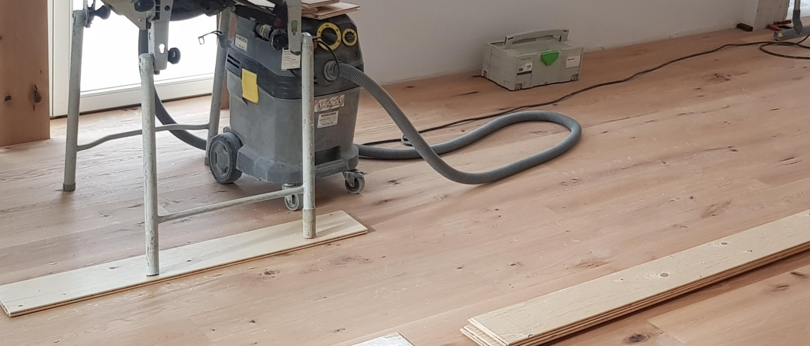

Montageservice

Eine fachgerechte Ausführung der Montage ist von größter Bedeutung!
Auf uns ist Verlass!
Wir arbeiten sauber und präzise. Vereinbarte Termine werden von uns eingehalten.
Gerne übernehmen wir folgende Montagearbeiten für Sie:
- Verlegung von Parkett, Massivdielen, Laminat, Kork und Designbeläge mit Erstellen der Anschlüsse (z. B. Dehnungsfugen, Sockelleisten)
- Untergrundvorbereitung, wie z. B. Estrich schleifen, Spachtelarbeiten
- Einbau von Innentüren, Glastüren, Schiebetüren aus Holz und Glas
- Demontage von Altbelägen/alten Türen
- fachgerechte Entsorgung